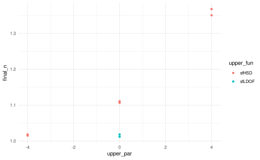
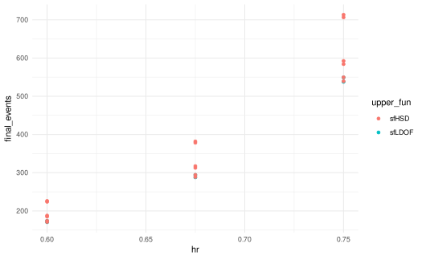

This vignette demonstrates dependency-aware grid search over group sequential designs using gsDesignTune.
Basic designs with gsDesignTune()
gsDesignTune() wraps gsDesign::gsDesign()
for tuning basic group sequential designs.
job <- gsDesignTune(
k = 3,
test.type = 2,
alpha = 0.025,
beta = 0.10,
timing = tune_values(list(c(0.33, 0.67, 1), c(0.5, 0.75, 1))),
upper = SpendingFamily$new(
SpendingSpec$new(sfLDOF, par = tune_fixed(0)),
SpendingSpec$new(sfHSD, par = tune_seq(-4, 4, length_out = 3))
)
)
job$run(strategy = "grid", parallel = FALSE)
res <- job$results()
head(res)
#> upper_setting timing upper_fun upper_par config_id status error_message
#> 1 function.... 0.33, 0..... sfLDOF 0 1 ok <NA>
#> 2 function.... 0.5, 0.75, 1 sfLDOF 0 2 ok <NA>
#> 3 function.... 0.33, 0..... sfHSD -4 3 ok <NA>
#> 4 function.... 0.5, 0.75, 1 sfHSD -4 4 ok <NA>
#> 5 function.... 0.33, 0..... sfHSD 0 5 ok <NA>
#> 6 function.... 0.5, 0.75, 1 sfHSD 0 6 ok <NA>
#> warnings cache_key design_rds call_args k test.type
#> 1 <NA> dda98a758aa7d77b22bbaf1dd65cbc0f <NA> 3, 2, 0..... 3 2
#> 2 <NA> 39d2904e2d8b950a89db2780f6b6d699 <NA> 3, 2, 0..... 3 2
#> 3 <NA> 97911208550ce92d69419a94fd1e0ec2 <NA> 3, 2, 0..... 3 2
#> 4 <NA> 503c551a1cf21057d81659eeb8483e68 <NA> 3, 2, 0..... 3 2
#> 5 <NA> 643deb18024fa01b1de2874e42a9dc66 <NA> 3, 2, 0..... 3 2
#> 6 <NA> ed750dfc7a5411194478dad66288c358 <NA> 3, 2, 0..... 3 2
#> alpha beta n_I final_n_I upper_z lower_z upper_p
#> 1 0.025 0.1 0.333977.... 1.012053 3.7307, .... -3.7307,.... 1e-04, 0....
#> 2 0.025 0.1 0.509137.... 1.018275 2.9626, .... -2.9626,.... 0.0015, ....
#> 3 0.025 0.1 0.335043.... 1.015284 3.0162, .... -3.0162,.... 0.0013, ....
#> 4 0.025 0.1 0.509227.... 1.018456 2.75, 2..... -2.75, -.... 0.003, 0....
#> 5 0.025 0.1 0.365230.... 1.106759 2.3977, .... -2.3977,.... 0.0082, ....
#> 6 0.025 0.1 0.555438.... 1.110878 2.2414, .... -2.2414,.... 0.0125, ....
#> lower_p power en upper_name
#> 1 1e-04, 0.... 0.9 1.007862.... Lan-DeMets O'Brien-Fleming approximation
#> 2 0.0015, .... 0.9 1.012586.... Lan-DeMets O'Brien-Fleming approximation
#> 3 0.0013, .... 0.9 1.010154.... Hwang-Shih-DeCani
#> 4 0.003, 0.... 0.9 1.012404.... Hwang-Shih-DeCani
#> 5 0.0082, .... 0.9 1.088314.... Hwang-Shih-DeCani
#> 6 0.0125, .... 0.9 1.093520.... Hwang-Shih-DeCani
#> lower_name bound_summary final_n max_n
#> 1 Lan-DeMets O'Brien-Fleming approximation c("IA 1:.... 1.012053 1.012053
#> 2 Lan-DeMets O'Brien-Fleming approximation c("IA 1:.... 1.018275 1.018275
#> 3 Hwang-Shih-DeCani c("IA 1:.... 1.015284 1.015284
#> 4 Hwang-Shih-DeCani c("IA 1:.... 1.018456 1.018456
#> 5 Hwang-Shih-DeCani c("IA 1:.... 1.106759 1.106759
#> 6 Hwang-Shih-DeCani c("IA 1:.... 1.110878 1.110878
#> upper_z1 lower_z1
#> 1 3.7307 -3.7307
#> 2 2.9626 -2.9626
#> 3 3.0162 -3.0162
#> 4 2.7500 -2.7500
#> 5 2.3977 -2.3977
#> 6 2.2414 -2.2414Ranking and filtering
best <- job$best("final_n", direction = "min")
head(best, 10)
#> upper_setting timing upper_fun upper_par config_id status error_message
#> 1 function.... 0.33, 0..... sfLDOF 0 1 ok <NA>
#> 3 function.... 0.33, 0..... sfHSD -4 3 ok <NA>
#> 2 function.... 0.5, 0.75, 1 sfLDOF 0 2 ok <NA>
#> 4 function.... 0.5, 0.75, 1 sfHSD -4 4 ok <NA>
#> 5 function.... 0.33, 0..... sfHSD 0 5 ok <NA>
#> 6 function.... 0.5, 0.75, 1 sfHSD 0 6 ok <NA>
#> 8 function.... 0.5, 0.75, 1 sfHSD 4 8 ok <NA>
#> 7 function.... 0.33, 0..... sfHSD 4 7 ok <NA>
#> warnings cache_key design_rds call_args k test.type
#> 1 <NA> dda98a758aa7d77b22bbaf1dd65cbc0f <NA> 3, 2, 0..... 3 2
#> 3 <NA> 97911208550ce92d69419a94fd1e0ec2 <NA> 3, 2, 0..... 3 2
#> 2 <NA> 39d2904e2d8b950a89db2780f6b6d699 <NA> 3, 2, 0..... 3 2
#> 4 <NA> 503c551a1cf21057d81659eeb8483e68 <NA> 3, 2, 0..... 3 2
#> 5 <NA> 643deb18024fa01b1de2874e42a9dc66 <NA> 3, 2, 0..... 3 2
#> 6 <NA> ed750dfc7a5411194478dad66288c358 <NA> 3, 2, 0..... 3 2
#> 8 <NA> 7471ab1954c8dc33729d4fb5c7d7138a <NA> 3, 2, 0..... 3 2
#> 7 <NA> af3ea234a90efd095991e0825ab52274 <NA> 3, 2, 0..... 3 2
#> alpha beta n_I final_n_I upper_z lower_z upper_p
#> 1 0.025 0.1 0.333977.... 1.012053 3.7307, .... -3.7307,.... 1e-04, 0....
#> 3 0.025 0.1 0.335043.... 1.015284 3.0162, .... -3.0162,.... 0.0013, ....
#> 2 0.025 0.1 0.509137.... 1.018275 2.9626, .... -2.9626,.... 0.0015, ....
#> 4 0.025 0.1 0.509227.... 1.018456 2.75, 2..... -2.75, -.... 0.003, 0....
#> 5 0.025 0.1 0.365230.... 1.106759 2.3977, .... -2.3977,.... 0.0082, ....
#> 6 0.025 0.1 0.555438.... 1.110878 2.2414, .... -2.2414,.... 0.0125, ....
#> 8 0.025 0.1 0.675309.... 1.350620 2.0137, .... -2.0137,.... 0.022, 0....
#> 7 0.025 0.1 0.451412.... 1.367918 2.0822, .... -2.0822,.... 0.0187, ....
#> lower_p power en upper_name
#> 1 1e-04, 0.... 0.9 1.007862.... Lan-DeMets O'Brien-Fleming approximation
#> 3 0.0013, .... 0.9 1.010154.... Hwang-Shih-DeCani
#> 2 0.0015, .... 0.9 1.012586.... Lan-DeMets O'Brien-Fleming approximation
#> 4 0.003, 0.... 0.9 1.012404.... Hwang-Shih-DeCani
#> 5 0.0082, .... 0.9 1.088314.... Hwang-Shih-DeCani
#> 6 0.0125, .... 0.9 1.093520.... Hwang-Shih-DeCani
#> 8 0.022, 0.... 0.9 1.319407.... Hwang-Shih-DeCani
#> 7 0.0187, .... 0.9 1.329142.... Hwang-Shih-DeCani
#> lower_name bound_summary final_n max_n
#> 1 Lan-DeMets O'Brien-Fleming approximation c("IA 1:.... 1.012053 1.012053
#> 3 Hwang-Shih-DeCani c("IA 1:.... 1.015284 1.015284
#> 2 Lan-DeMets O'Brien-Fleming approximation c("IA 1:.... 1.018275 1.018275
#> 4 Hwang-Shih-DeCani c("IA 1:.... 1.018456 1.018456
#> 5 Hwang-Shih-DeCani c("IA 1:.... 1.106759 1.106759
#> 6 Hwang-Shih-DeCani c("IA 1:.... 1.110878 1.110878
#> 8 Hwang-Shih-DeCani c("IA 1:.... 1.350620 1.350620
#> 7 Hwang-Shih-DeCani c("IA 1:.... 1.367918 1.367918
#> upper_z1 lower_z1
#> 1 3.7307 -3.7307
#> 3 3.0162 -3.0162
#> 2 2.9626 -2.9626
#> 4 2.7500 -2.7500
#> 5 2.3977 -2.3977
#> 6 2.2414 -2.2414
#> 8 2.0137 -2.0137
#> 7 2.0822 -2.0822Plot
if (requireNamespace("ggplot2", quietly = TRUE)) {
job$plot(metric = "final_n", x = "upper_par", color = "upper_fun")
}
#> Warning: `aes_string()` was deprecated in ggplot2 3.0.0.
#> ℹ Please use tidy evaluation idioms with `aes()`.
#> ℹ See also `vignette("ggplot2-in-packages")` for more information.
#> ℹ The deprecated feature was likely used in the gsDesignTune package.
#> Please report the issue at
#> <https://github.com/nanxstats/gsDesignTune/issues>.
#> This warning is displayed once per session.
#> Call `lifecycle::last_lifecycle_warnings()` to see where this warning was
#> generated.
Survival designs with gsSurvTune()
gsSurvTune() wraps gsDesign::gsSurv() for
tuning time-to-event designs.
job_surv <- gsSurvTune(
k = 3,
test.type = 4,
alpha = 0.025,
beta = 0.10,
timing = tune_values(list(c(0.33, 0.67, 1), c(0.5, 0.75, 1))),
hr = tune_seq(0.60, 0.75, length_out = 3),
upper = SpendingFamily$new(
SpendingSpec$new(sfLDOF, par = tune_fixed(0)),
SpendingSpec$new(sfHSD, par = tune_seq(-4, 4, length_out = 3))
),
lower = SpendingSpec$new(sfLDOF, par = tune_fixed(0)),
lambdaC = log(2) / 6,
eta = 0.01,
gamma = c(2.5, 5, 7.5, 10),
R = c(2, 2, 2, 6),
T = 18,
minfup = 6,
ratio = 1
)
job_surv$run(strategy = "grid", parallel = FALSE)
res_surv <- job_surv$results()
head(res_surv)
#> upper_setting lower_setting timing hr upper_fun upper_par lower_fun
#> 1 function.... function.... 0.33, 0..... 0.600 sfLDOF 0 sfLDOF
#> 2 function.... function.... 0.33, 0..... 0.675 sfLDOF 0 sfLDOF
#> 3 function.... function.... 0.33, 0..... 0.750 sfLDOF 0 sfLDOF
#> 4 function.... function.... 0.5, 0.75, 1 0.600 sfLDOF 0 sfLDOF
#> 5 function.... function.... 0.5, 0.75, 1 0.675 sfLDOF 0 sfLDOF
#> 6 function.... function.... 0.5, 0.75, 1 0.750 sfLDOF 0 sfLDOF
#> lower_par config_id status error_message warnings
#> 1 0 1 ok <NA> <NA>
#> 2 0 2 ok <NA> <NA>
#> 3 0 3 ok <NA> <NA>
#> 4 0 4 ok <NA> <NA>
#> 5 0 5 ok <NA> <NA>
#> 6 0 6 ok <NA> <NA>
#> cache_key design_rds call_args k test.type alpha
#> 1 2632c16612849ef2a79874db0dc53b64 <NA> 3, 4, 0..... 3 4 0.025
#> 2 46a33b35e6b495e889e9c8747737924f <NA> 3, 4, 0..... 3 4 0.025
#> 3 29886ccbd417ccb6419113245cb2b368 <NA> 3, 4, 0..... 3 4 0.025
#> 4 1918ace696fe7c2423bb649e5be56f6c <NA> 3, 4, 0..... 3 4 0.025
#> 5 cceb5a391386332f7a09df329e74d4cc <NA> 3, 4, 0..... 3 4 0.025
#> 6 6d53da91df130ebb3fe9e2bd405704f1 <NA> 3, 4, 0..... 3 4 0.025
#> beta n_I final_n_I upper_z lower_z upper_p
#> 1 0.1 56.24907.... 170.4517 3.7307, .... -0.719, .... 1e-04, 0....
#> 2 0.1 95.02760.... 287.9624 3.7307, .... -0.719, .... 1e-04, 0....
#> 3 0.1 177.4604.... 537.7591 3.7307, .... -0.719, .... 1e-04, 0....
#> 4 0.1 87.06008.... 174.1202 2.9626, .... 0.3316, .... 0.0015, ....
#> 5 0.1 147.0799.... 294.1598 2.9626, .... 0.3316, .... 0.0015, ....
#> 6 0.1 274.6662.... 549.3326 2.9626, .... 0.3316, .... 0.0015, ....
#> lower_p power en upper_name
#> 1 0.7639, .... 0.9 108.7925.... Lan-DeMets O'Brien-Fleming approximation
#> 2 0.7639, .... 0.9 183.7948.... Lan-DeMets O'Brien-Fleming approximation
#> 3 0.7639, .... 0.9 343.2300.... Lan-DeMets O'Brien-Fleming approximation
#> 4 0.3701, .... 0.9 106.7777.... Lan-DeMets O'Brien-Fleming approximation
#> 5 0.3701, .... 0.9 180.3910.... Lan-DeMets O'Brien-Fleming approximation
#> 6 0.3701, .... 0.9 336.8735.... Lan-DeMets O'Brien-Fleming approximation
#> lower_name bound_summary final_events
#> 1 Lan-DeMets O'Brien-Fleming approximation c("IA 1:.... 170.4517
#> 2 Lan-DeMets O'Brien-Fleming approximation c("IA 1:.... 287.9624
#> 3 Lan-DeMets O'Brien-Fleming approximation c("IA 1:.... 537.7591
#> 4 Lan-DeMets O'Brien-Fleming approximation c("IA 1:.... 174.1202
#> 5 Lan-DeMets O'Brien-Fleming approximation c("IA 1:.... 294.1598
#> 6 Lan-DeMets O'Brien-Fleming approximation c("IA 1:.... 549.3326
#> max_events n_total final_n_total analysis_time upper_z1 lower_z1
#> 1 170.4517 216, 296.... 296 9.582183.... 3.7307 -0.7190
#> 2 287.9624 352, 482.... 482 9.554795.... 3.7307 -0.7190
#> 3 537.7591 634, 874.... 874 9.524268.... 3.7307 -0.7190
#> 4 174.1202 284, 302.... 302 11.48078.... 2.9626 0.3316
#> 5 294.1598 462, 492.... 492 11.45171.... 2.9626 0.3316
#> 6 549.3326 834, 892.... 892 11.41939.... 2.9626 0.3316Calendar-timed analyses with gsSurvCalendarTune()
gsSurvCalendarTune() is similar to
gsSurvTune(), but you specify planned calendar times of
analyses via calendarTime instead of information
timing.
job_cal <- gsSurvCalendarTune(
test.type = 4,
alpha = 0.025,
beta = 0.10,
calendarTime = tune_values(list(c(12, 24, 36), c(9, 18, 27))),
spending = tune_choice("information", "calendar"),
hr = tune_seq(0.60, 0.75, length_out = 3),
upper = SpendingFamily$new(
SpendingSpec$new(sfLDOF, par = tune_fixed(0)),
SpendingSpec$new(sfHSD, par = tune_seq(-4, 4, length_out = 3))
),
lower = SpendingSpec$new(sfLDOF, par = tune_fixed(0)),
lambdaC = log(2) / 6,
eta = 0.01,
gamma = c(2.5, 5, 7.5, 10),
R = c(2, 2, 2, 6),
minfup = 18,
ratio = 1
)
job_cal$run(strategy = "grid", parallel = FALSE)
res_cal <- job_cal$results()
head(res_cal)
#> upper_setting lower_setting calendarTime spending hr upper_fun
#> 1 function.... function.... 12, 24, 36 information 0.600 sfLDOF
#> 2 function.... function.... 12, 24, 36 information 0.675 sfLDOF
#> 3 function.... function.... 12, 24, 36 information 0.750 sfLDOF
#> 4 function.... function.... 12, 24, 36 calendar 0.600 sfLDOF
#> 5 function.... function.... 12, 24, 36 calendar 0.675 sfLDOF
#> 6 function.... function.... 12, 24, 36 calendar 0.750 sfLDOF
#> upper_par lower_fun lower_par config_id status error_message warnings
#> 1 0 sfLDOF 0 1 ok <NA> <NA>
#> 2 0 sfLDOF 0 2 ok <NA> <NA>
#> 3 0 sfLDOF 0 3 ok <NA> <NA>
#> 4 0 sfLDOF 0 4 ok <NA> <NA>
#> 5 0 sfLDOF 0 5 ok <NA> <NA>
#> 6 0 sfLDOF 0 6 ok <NA> <NA>
#> cache_key design_rds call_args k test.type alpha
#> 1 80cab7b3f1ef2cb7d69b05ad76d9fe04 <NA> 4, 0.025.... 3 4 0.025
#> 2 7837c4562ffa62cb6de39f7f8279e011 <NA> 4, 0.025.... 3 4 0.025
#> 3 2980340293108aa9f6219e183297e8f1 <NA> 4, 0.025.... 3 4 0.025
#> 4 e877db1b97bfb9310c1debbb4405958c <NA> 4, 0.025.... 3 4 0.025
#> 5 1cdb690fdd68835e83c7f82502877392 <NA> 4, 0.025.... 3 4 0.025
#> 6 23025db4f9212c44abb2e45c5041b8be <NA> 4, 0.025.... 3 4 0.025
#> beta timing n_I final_n_I upper_z lower_z
#> 1 0.1 0.234953.... 40.57744.... 172.7038 4.4783, .... -1.5645,....
#> 2 0.1 0.239261.... 70.11502.... 293.0477 4.4352, .... -1.5165,....
#> 3 0.1 0.243794.... 133.8101.... 548.8641 4.3911, .... -1.467, ....
#> 4 0.1 0.234953.... 38.77267.... 165.0225 3.7103, .... -1.0234,....
#> 5 0.1 0.239261.... 66.81872.... 279.2707 3.7103, .... -1.0102,....
#> 6 0.1 0.243794.... 127.1925.... 521.7201 3.7103, .... -0.9963,....
#> upper_p lower_p power en
#> 1 0, 0.011.... 0.9412, .... 0.9 132.7343....
#> 2 0, 0.012.... 0.9353, .... 0.9 226.1005....
#> 3 0, 0.012.... 0.9288, .... 0.9 424.9595....
#> 4 1e-04, 0.... 0.8469, .... 0.9 119.9537....
#> 5 1e-04, 0.... 0.8438, .... 0.9 204.1470....
#> 6 1e-04, 0.... 0.8404, .... 0.9 383.4977....
#> upper_name
#> 1 Lan-DeMets O'Brien-Fleming approximation
#> 2 Lan-DeMets O'Brien-Fleming approximation
#> 3 Lan-DeMets O'Brien-Fleming approximation
#> 4 Lan-DeMets O'Brien-Fleming approximation
#> 5 Lan-DeMets O'Brien-Fleming approximation
#> 6 Lan-DeMets O'Brien-Fleming approximation
#> lower_name bound_summary final_events
#> 1 Lan-DeMets O'Brien-Fleming approximation c("IA 1:.... 172.7038
#> 2 Lan-DeMets O'Brien-Fleming approximation c("IA 1:.... 293.0477
#> 3 Lan-DeMets O'Brien-Fleming approximation c("IA 1:.... 548.8641
#> 4 Lan-DeMets O'Brien-Fleming approximation c("IA 1:.... 165.0225
#> 5 Lan-DeMets O'Brien-Fleming approximation c("IA 1:.... 279.2707
#> 6 Lan-DeMets O'Brien-Fleming approximation c("IA 1:.... 521.7201
#> max_events n_total final_n_total analysis_time upper_z1 lower_z1
#> 1 172.7038 128, 212.... 212 12, 24, 36 4.4783 -1.5645
#> 2 293.0477 212, 354.... 354 12, 24, 36 4.4352 -1.5165
#> 3 548.8641 390, 650.... 650 12, 24, 36 4.3911 -1.4670
#> 4 165.0225 122, 204.... 204 12, 24, 36 3.7103 -1.0234
#> 5 279.2707 202, 336.... 336 12, 24, 36 3.7103 -1.0102
#> 6 521.7201 372, 618.... 618 12, 24, 36 3.7103 -0.9963Multi-scenario exploration
best_surv <- job_surv$best("final_events", direction = "min")
head(best_surv, 10)
#> upper_setting lower_setting timing hr upper_fun upper_par lower_fun
#> 1 function.... function.... 0.33, 0..... 0.600 sfLDOF 0 sfLDOF
#> 7 function.... function.... 0.33, 0..... 0.600 sfHSD -4 sfLDOF
#> 4 function.... function.... 0.5, 0.75, 1 0.600 sfLDOF 0 sfLDOF
#> 10 function.... function.... 0.5, 0.75, 1 0.600 sfHSD -4 sfLDOF
#> 13 function.... function.... 0.33, 0..... 0.600 sfHSD 0 sfLDOF
#> 16 function.... function.... 0.5, 0.75, 1 0.600 sfHSD 0 sfLDOF
#> 22 function.... function.... 0.5, 0.75, 1 0.600 sfHSD 4 sfLDOF
#> 19 function.... function.... 0.33, 0..... 0.600 sfHSD 4 sfLDOF
#> 2 function.... function.... 0.33, 0..... 0.675 sfLDOF 0 sfLDOF
#> 8 function.... function.... 0.33, 0..... 0.675 sfHSD -4 sfLDOF
#> lower_par config_id status error_message warnings
#> 1 0 1 ok <NA> <NA>
#> 7 0 7 ok <NA> <NA>
#> 4 0 4 ok <NA> <NA>
#> 10 0 10 ok <NA> <NA>
#> 13 0 13 ok <NA> <NA>
#> 16 0 16 ok <NA> <NA>
#> 22 0 22 ok <NA> <NA>
#> 19 0 19 ok <NA> <NA>
#> 2 0 2 ok <NA> <NA>
#> 8 0 8 ok <NA> <NA>
#> cache_key design_rds call_args k test.type alpha
#> 1 2632c16612849ef2a79874db0dc53b64 <NA> 3, 4, 0..... 3 4 0.025
#> 7 aa3443f9ff6b1e3575abc774ebdd0f78 <NA> 3, 4, 0..... 3 4 0.025
#> 4 1918ace696fe7c2423bb649e5be56f6c <NA> 3, 4, 0..... 3 4 0.025
#> 10 ea43c029143b75ad763304b8a866b9cc <NA> 3, 4, 0..... 3 4 0.025
#> 13 3ea253a887add15bfcd3109e33b8241c <NA> 3, 4, 0..... 3 4 0.025
#> 16 ee63c37349ba2fc7a2c5ac232d982a5e <NA> 3, 4, 0..... 3 4 0.025
#> 22 8847b3cd010170ae57638e5f0e9426c7 <NA> 3, 4, 0..... 3 4 0.025
#> 19 e3d01ca2cde0dbc16cd4c792c440abdb <NA> 3, 4, 0..... 3 4 0.025
#> 2 46a33b35e6b495e889e9c8747737924f <NA> 3, 4, 0..... 3 4 0.025
#> 8 ce952f6124e937a39cf9ce6eb95b1119 <NA> 3, 4, 0..... 3 4 0.025
#> beta n_I final_n_I upper_z lower_z upper_p
#> 1 0.1 56.24907.... 170.4517 3.7307, .... -0.719, .... 1e-04, 0....
#> 7 0.1 56.42214.... 170.9762 3.0162, .... -0.7161,.... 0.0013, ....
#> 4 0.1 87.06008.... 174.1202 2.9626, .... 0.3316, .... 0.0015, ....
#> 10 0.1 87.11271.... 174.2254 2.75, 2..... 0.3323, .... 0.003, 0....
#> 13 0.1 61.09307.... 185.1305 2.3977, .... -0.6382,.... 0.0082, ....
#> 16 0.1 93.90369.... 187.8074 2.2414, .... 0.4235, .... 0.0125, ....
#> 22 0.1 111.9806.... 223.9612 2.0137, .... 0.6515, .... 0.022, 0....
#> 19 0.1 74.60758.... 226.0836 2.0822, .... -0.4282,.... 0.0187, ....
#> 2 0.1 95.02760.... 287.9624 3.7307, .... -0.719, .... 1e-04, 0....
#> 8 0.1 95.31999.... 288.8485 3.0162, .... -0.7161,.... 0.0013, ....
#> lower_p power en upper_name
#> 1 0.7639, .... 0.9000000 108.7925.... Lan-DeMets O'Brien-Fleming approximation
#> 7 0.763, 0.... 0.9000000 108.9419.... Hwang-Shih-DeCani
#> 4 0.3701, .... 0.9000000 106.7777.... Lan-DeMets O'Brien-Fleming approximation
#> 10 0.3698, .... 0.9000000 106.7939.... Hwang-Shih-DeCani
#> 13 0.7383, .... 0.9000000 113.8644.... Hwang-Shih-DeCani
#> 16 0.336, 0.... 0.9000000 111.8445.... Hwang-Shih-DeCani
#> 22 0.2574, .... 0.9000000 126.5371.... Hwang-Shih-DeCani
#> 19 0.6658, .... 0.8999999 128.5347.... Hwang-Shih-DeCani
#> 2 0.7639, .... 0.9000000 183.7948.... Lan-DeMets O'Brien-Fleming approximation
#> 8 0.763, 0.... 0.9000000 184.0472.... Hwang-Shih-DeCani
#> lower_name bound_summary final_events
#> 1 Lan-DeMets O'Brien-Fleming approximation c("IA 1:.... 170.4517
#> 7 Lan-DeMets O'Brien-Fleming approximation c("IA 1:.... 170.9762
#> 4 Lan-DeMets O'Brien-Fleming approximation c("IA 1:.... 174.1202
#> 10 Lan-DeMets O'Brien-Fleming approximation c("IA 1:.... 174.2254
#> 13 Lan-DeMets O'Brien-Fleming approximation c("IA 1:.... 185.1305
#> 16 Lan-DeMets O'Brien-Fleming approximation c("IA 1:.... 187.8074
#> 22 Lan-DeMets O'Brien-Fleming approximation c("IA 1:.... 223.9612
#> 19 Lan-DeMets O'Brien-Fleming approximation c("IA 1:.... 226.0836
#> 2 Lan-DeMets O'Brien-Fleming approximation c("IA 1:.... 287.9624
#> 8 Lan-DeMets O'Brien-Fleming approximation c("IA 1:.... 288.8485
#> max_events n_total final_n_total analysis_time upper_z1 lower_z1
#> 1 170.4517 216, 296.... 296 9.582183.... 3.7307 -0.7190
#> 7 170.9762 218, 296.... 296 9.582183.... 3.0162 -0.7161
#> 4 174.1202 284, 302.... 302 11.48078.... 2.9626 0.3316
#> 10 174.2254 284, 302.... 302 11.48078.... 2.7500 0.3323
#> 13 185.1305 234, 320.... 320 9.582183.... 2.3977 -0.6382
#> 16 187.8074 306, 326.... 326 11.48078.... 2.2414 0.4235
#> 22 223.9612 366, 388.... 388 11.48078.... 2.0137 0.6515
#> 19 226.0836 286, 392.... 392 9.582183.... 2.0822 -0.4282
#> 2 287.9624 352, 482.... 482 9.554795.... 3.7307 -0.7190
#> 8 288.8485 352, 484.... 484 9.554795.... 3.0162 -0.7161
if (requireNamespace("ggplot2", quietly = TRUE)) {
job_surv$plot(metric = "final_events", x = "hr", color = "upper_fun")
}
Export a report
report_path <- tempfile(fileext = ".html")
job_surv$report(report_path)
report_path
#> [1] "/tmp/Rtmp9fJ987/file1d731e150d54.html"